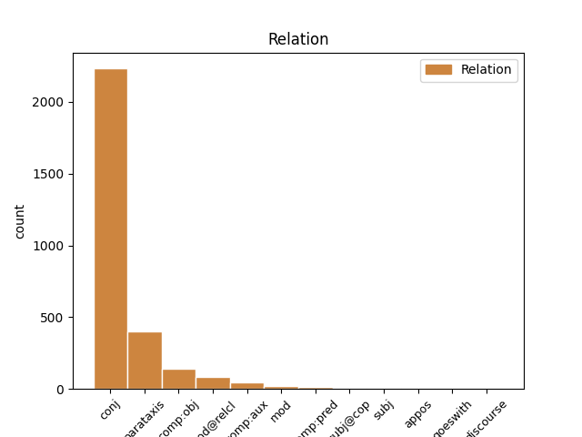
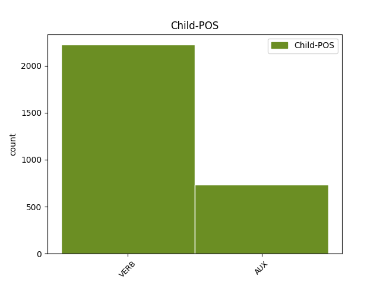

Distribution of features within this leaf


Agreement Rules sorted by frequency.
- When the dependent token is the conjunct(conj) of the head token, and the dependent token is VERB.
1 Pääsääntöisesti _ _ _ _ 0 _ _ _
2 väkiluvun _ _ _ _ 0 _ _ _
3 kasvusta _ _ _ _ 0 _ _ _
4 tuli _ _ _ _ 0 _ _ _
5 kuitenkin _ _ _ _ 0 _ _ _
6 maahanmuutosta _ _ _ _ 0 _ _ _
7 , _ _ _ _ 0 _ _ _
8 sillä _ _ _ _ 0 _ _ _
9 maahan _ _ _ _ 0 _ _ _
10 muutti muuttaa VERB V Mood=Ind|Number=Sing|Person=3|Tense=Past|VerbForm=Fin|Voice=Act 0 _ _ _
11 vuonna _ _ _ _ 0 _ _ _
12 2007 _ _ _ _ 0 _ _ _
13 25 900 _ _ _ _ 0 _ _ _
14 henkeä _ _ _ _ 0 _ _ _
15 ja _ _ _ _ 0 _ _ _
16 maasta _ _ _ _ 0 _ _ _
17 pois _ _ _ _ 0 _ _ _
18 muutti muuttaa VERB V Mood=Ind|Number=Sing|Person=3|Tense=Past|VerbForm=Fin|Voice=Act 10 conj _ _
19 12 400 _ _ _ _ 0 _ _ _
20 henkeä _ _ _ _ 0 _ _ _
21 . _ _ _ _ 0 _ _ _
1 Kahdeksassa _ _ _ _ 0 _ _ _
2 maakunnassa _ _ _ _ 0 _ _ _
3 puolestaan _ _ _ _ 0 _ _ _
4 väki _ _ _ _ 0 _ _ _
5 väheni vähetä VERB V Mood=Ind|Number=Sing|Person=3|Tense=Past|VerbForm=Fin|Voice=Act 0 _ _ _
6 ja _ _ _ _ 0 _ _ _
7 eniten _ _ _ _ 0 _ _ _
8 menettäneitä _ _ _ _ 0 _ _ _
9 maakuntia _ _ _ _ 0 _ _ _
10 olivat olla AUX V Mood=Ind|Number=Plur|Person=3|Tense=Past|VerbForm=Fin|Voice=Act 5 conj _ _
11 Etelä-Savo _ _ _ _ 0 _ _ _
12 ja _ _ _ _ 0 _ _ _
13 Satakunta _ _ _ _ 0 _ _ _
14 . _ _ _ _ 0 _ _ _
1 Suomen _ _ _ _ 0 _ _ _
2 väliluvun _ _ _ _ 0 _ _ _
3 kasvu _ _ _ _ 0 _ _ _
4 oli olla AUX V Mood=Ind|Number=Sing|Person=3|Tense=Past|VerbForm=Fin|Voice=Act 0 _ _ _
5 suurinta _ _ _ _ 0 _ _ _
6 15 _ _ _ _ 0 _ _ _
7 vuoteen _ _ _ _ 0 _ _ _
8 ja _ _ _ _ 0 _ _ _
9 vuoden _ _ _ _ 0 _ _ _
10 lopulla _ _ _ _ 0 _ _ _
11 väkiluku _ _ _ _ 0 _ _ _
12 yltää _ _ _ _ 0 _ _ _
13 5,5 _ _ _ _ 0 _ _ _
14 miljoonaan _ _ _ _ 0 _ _ _
15 , _ _ _ _ 0 _ _ _
16 arvioi arvioida VERB V Mood=Ind|Number=Sing|Person=3|Tense=Pres|VerbForm=Fin|Voice=Act 4 parataxis _ _
17 Tilastokeskus _ _ _ _ 0 _ _ _
18 . _ _ _ _ 0 _ _ _
1 Symposiumissa _ _ _ _ 0 _ _ _
2 pohdittiin pohtia VERB V Mood=Ind|Tense=Past|VerbForm=Fin|Voice=Pass 0 _ _ _
3 , _ _ _ _ 0 _ _ _
4 millaista _ _ _ _ 0 _ _ _
5 tietoa _ _ _ _ 0 _ _ _
6 potilas _ _ _ _ 0 _ _ _
7 tarvitsee tarvita VERB V Mood=Ind|Number=Sing|Person=3|Tense=Pres|VerbForm=Fin|Voice=Act 2 comp:obj _ _
8 sairastuttuaan _ _ _ _ 0 _ _ _
9 . _ _ _ _ 0 _ _ _
1 Tapahtuma _ _ _ _ 0 _ _ _
2 on olla AUX V Mood=Ind|Number=Sing|Person=3|Tense=Pres|VerbForm=Fin|Voice=Act 0 _ _ _
3 kerännyt _ _ _ _ 0 _ _ _
4 vuosi _ _ _ _ 0 _ _ _
5 vuodelta _ _ _ _ 0 _ _ _
6 enemmän _ _ _ _ 0 _ _ _
7 kävijöitä _ _ _ _ 0 _ _ _
8 – _ _ _ _ 0 _ _ _
9 vuonna _ _ _ _ 0 _ _ _
10 2005 _ _ _ _ 0 _ _ _
11 järjestetyssä _ _ _ _ 0 _ _ _
12 ensimmäisessä _ _ _ _ 0 _ _ _
13 tapahtumassa _ _ _ _ 0 _ _ _
14 kävijöitä _ _ _ _ 0 _ _ _
15 oli olla AUX V Mood=Ind|Number=Sing|Person=3|Tense=Past|VerbForm=Fin|Voice=Act 2 parataxis _ _
16 noin _ _ _ _ 0 _ _ _
17 tuhat _ _ _ _ 0 _ _ _
18 , _ _ _ _ 0 _ _ _
19 vuonna _ _ _ _ 0 _ _ _
20 2006 _ _ _ _ 0 _ _ _
21 noin _ _ _ _ 0 _ _ _
22 1 800 _ _ _ _ 0 _ _ _
23 ja _ _ _ _ 0 _ _ _
24 vuonna _ _ _ _ 0 _ _ _
25 2008 _ _ _ _ 0 _ _ _
26 noin _ _ _ _ 0 _ _ _
27 2 800 _ _ _ _ 0 _ _ _
28 . _ _ _ _ 0 _ _ _
1 Kurssi _ _ _ _ 0 _ _ _
2 jatkoi jatkaa VERB V Mood=Ind|Number=Sing|Person=3|Tense=Past|VerbForm=Fin|Voice=Act 0 _ _ _
3 kuitenkin _ _ _ _ 0 _ _ _
4 jyrkkää _ _ _ _ 0 _ _ _
5 syöksyä _ _ _ _ 0 _ _ _
6 markkinoilla _ _ _ _ 0 _ _ _
7 , _ _ _ _ 0 _ _ _
8 minkä _ _ _ _ 0 _ _ _
9 johdosta _ _ _ _ 0 _ _ _
10 euro _ _ _ _ 0 _ _ _
11 maksoi maksaa VERB V Mood=Ind|Number=Sing|Person=3|Tense=Past|VerbForm=Fin|Voice=Act 2 mod@relcl _ _
12 jo _ _ _ _ 0 _ _ _
13 265 _ _ _ _ 0 _ _ _
14 kruunua _ _ _ _ 0 _ _ _
15 . _ _ _ _ 0 _ _ _
1 Vaimo _ _ _ _ 0 _ _ _
2 Veronica _ _ _ _ 0 _ _ _
3 Lario _ _ _ _ 0 _ _ _
4 kysyi kysyä VERB V Mood=Ind|Number=Sing|Person=3|Tense=Past|VerbForm=Fin|Voice=Act 0 _ _ _
5 : _ _ _ _ 0 _ _ _
6 Miten _ _ _ _ 0 _ _ _
7 on olla AUX V Mood=Ind|Number=Sing|Person=0|Tense=Pres|VerbForm=Fin|Voice=Act 4 comp:obj _ _
8 mahdollista _ _ _ _ 0 _ _ _
9 hyväksyä _ _ _ _ 0 _ _ _
10 sellainen _ _ _ _ 0 _ _ _
11 poliittinen _ _ _ _ 0 _ _ _
12 kulttuuri _ _ _ _ 0 _ _ _
13 , _ _ _ _ 0 _ _ _
14 jossa _ _ _ _ 0 _ _ _
15 parlamenttiehdokkaaksi _ _ _ _ 0 _ _ _
16 asetetaan _ _ _ _ 0 _ _ _
17 pääministerin _ _ _ _ 0 _ _ _
18 suosimia _ _ _ _ 0 _ _ _
19 tanssityttöjä _ _ _ _ 0 _ _ _
20 ? _ _ _ _ 0 _ _ _
21 ” _ _ _ _ 0 _ _ _
1 Jos _ _ _ _ 0 _ _ _
2 vanhemmat _ _ _ _ 0 _ _ _
3 elävät _ _ _ _ 0 _ _ _
4 useita _ _ _ _ 0 _ _ _
5 vuosia _ _ _ _ 0 _ _ _
6 yhdessä _ _ _ _ 0 _ _ _
7 , _ _ _ _ 0 _ _ _
8 saattaa saattaa AUX V Mood=Ind|Number=Sing|Person=3|Tense=Pres|VerbForm=Fin|Voice=Act 0 _ _ _
9 yksittäinen _ _ _ _ 0 _ _ _
10 poikanen _ _ _ _ 0 _ _ _
11 elää elää VERB V Mood=Ind|Number=Sing|Person=3|Tense=Pres|VerbForm=Fin|Voice=Act 8 comp:aux _ _
12 ryhmässä _ _ _ _ 0 _ _ _
13 jopa _ _ _ _ 0 _ _ _
14 kuusi _ _ _ _ 0 _ _ _
15 vuotta _ _ _ _ 0 _ _ _
16 muodostamatta _ _ _ _ 0 _ _ _
17 omaa _ _ _ _ 0 _ _ _
18 ryhmää _ _ _ _ 0 _ _ _
19 tai _ _ _ _ 0 _ _ _
20 siirtymättä _ _ _ _ 0 _ _ _
21 muualle _ _ _ _ 0 _ _ _
22 . _ _ _ _ 0 _ _ _
1 Kauppala _ _ _ _ 0 _ _ _
2 sijaitsee sijaita VERB V Mood=Ind|Number=Sing|Person=3|Tense=Pres|VerbForm=Fin|Voice=Act 0 _ _ _
3 suunnilleen _ _ _ _ 0 _ _ _
4 A1-valtatien _ _ _ _ 0 _ _ _
5 puolivälissä _ _ _ _ 0 _ _ _
6 matkalla _ _ _ _ 0 _ _ _
7 Lontoosta _ _ _ _ 0 _ _ _
8 Edinburghiin _ _ _ _ 0 _ _ _
9 , _ _ _ _ 0 _ _ _
10 mikä _ _ _ _ 0 _ _ _
11 on olla AUX V Mood=Ind|Number=Sing|Person=3|Tense=Pres|VerbForm=Fin|Voice=Act 2 mod@relcl _ _
12 pitänyt _ _ _ _ 0 _ _ _
13 Wetherbyn _ _ _ _ 0 _ _ _
14 monet _ _ _ _ 0 _ _ _
15 pubit _ _ _ _ 0 _ _ _
16 , _ _ _ _ 0 _ _ _
17 majatalot _ _ _ _ 0 _ _ _
18 ja _ _ _ _ 0 _ _ _
19 yritykset _ _ _ _ 0 _ _ _
20 hengissä _ _ _ _ 0 _ _ _
21 monien _ _ _ _ 0 _ _ _
22 vuosisatojen _ _ _ _ 0 _ _ _
23 ajan _ _ _ _ 0 _ _ _
24 . _ _ _ _ 0 _ _ _
1 Vaalituloksien _ _ _ _ 0 _ _ _
2 perusteella _ _ _ _ 0 _ _ _
3 myös _ _ _ _ 0 _ _ _
4 Keskusta _ _ _ _ 0 _ _ _
5 menetti _ _ _ _ 0 _ _ _
6 neljä _ _ _ _ 0 _ _ _
7 paikkaa _ _ _ _ 0 _ _ _
8 , _ _ _ _ 0 _ _ _
9 mutta _ _ _ _ 0 _ _ _
10 sen _ _ _ _ 0 _ _ _
11 onnistui onnistua VERB V Mood=Ind|Number=Sing|Person=3|Tense=Past|VerbForm=Fin|Voice=Act 0 _ _ _
12 silti _ _ _ _ 0 _ _ _
13 neuvotteluissa _ _ _ _ 0 _ _ _
14 muodostaa muodostaa VERB V Mood=Ind|Number=Sing|Person=3|Tense=Pres|VerbForm=Fin|Voice=Act 11 comp:pred _ _
15 hallitus _ _ _ _ 0 _ _ _
16 yhdessä _ _ _ _ 0 _ _ _
17 Kokoomuksen _ _ _ _ 0 _ _ _
18 kanssa _ _ _ _ 0 _ _ _
19 ja _ _ _ _ 0 _ _ _
20 saada _ _ _ _ 0 _ _ _
21 pääministerin _ _ _ _ 0 _ _ _
22 virka _ _ _ _ 0 _ _ _
23 puolueen _ _ _ _ 0 _ _ _
24 puheenjohtajalle _ _ _ _ 0 _ _ _
25 Matti _ _ _ _ 0 _ _ _
26 Vanhaselle _ _ _ _ 0 _ _ _
27 . _ _ _ _ 0 _ _ _
1 Tähän _ _ _ _ 0 _ _ _
2 on _ _ _ _ 0 _ _ _
3 olemassa _ _ _ _ 0 _ _ _
4 oma _ _ _ _ 0 _ _ _
5 hyvä _ _ _ _ 0 _ _ _
6 syynsäkin _ _ _ _ 0 _ _ _
7 kuten _ _ _ _ 0 _ _ _
8 Aamulehden _ _ _ _ 0 _ _ _
9 toimittaja _ _ _ _ 0 _ _ _
10 Riitta-Liisa _ _ _ _ 0 _ _ _
11 Pirttikoski _ _ _ _ 0 _ _ _
12 toteaa _ _ _ _ 0 _ _ _
13 : _ _ _ _ 0 _ _ _
14 " _ _ _ _ 0 _ _ _
15 Ja _ _ _ _ 0 _ _ _
16 miksi _ _ _ _ 0 _ _ _
17 , _ _ _ _ 0 _ _ _
18 sillä _ _ _ _ 0 _ _ _
19 paras _ _ _ _ 0 _ _ _
20 on _ _ _ _ 0 _ _ _
21 sama _ _ _ _ 0 _ _ _
22 : _ _ _ _ 0 _ _ _
23 omintakeinen _ _ _ _ 0 _ _ _
24 itsellisyys _ _ _ _ 0 _ _ _
25 , _ _ _ _ 0 _ _ _
26 jonka _ _ _ _ 0 _ _ _
27 avulla _ _ _ _ 0 _ _ _
28 seistään seistä VERB V Mood=Ind|Tense=Pres|VerbForm=Fin|Voice=Pass 0 _ _ _
29 pystyssä _ _ _ _ 0 _ _ _
30 , _ _ _ _ 0 _ _ _
31 toi tuoda VERB V Mood=Ind|Number=Sing|Person=3|Tense=Past|VerbForm=Fin|Voice=Act 28 mod _ _
32 tuleva _ _ _ _ 0 _ _ _
33 mitä _ _ _ _ 0 _ _ _
34 tahansa _ _ _ _ 0 _ _ _
35 " _ _ _ _ 0 _ _ _
1 Mitalin _ _ _ _ 0 _ _ _
2 myöntämisestä _ _ _ _ 0 _ _ _
3 päättävän _ _ _ _ 0 _ _ _
4 lautakunnan _ _ _ _ 0 _ _ _
5 perustelu _ _ _ _ 0 _ _ _
6 mitalin _ _ _ _ 0 _ _ _
7 myöntämiselle _ _ _ _ 0 _ _ _
8 oli olla AUX V Mood=Ind|Number=Sing|Person=3|Tense=Past|VerbForm=Fin|Voice=Act 12 comp:aux _ SpaceAfter=No
9 , _ _ _ _ 0 _ _ _
10 että _ _ _ _ 0 _ _ _
11 Vuorio _ _ _ _ 0 _ _ _
12 on olla AUX V Mood=Ind|Number=Sing|Person=3|Tense=Pres|VerbForm=Fin|Voice=Act 0 _ _ _
13 huomattavalla _ _ _ _ 0 _ _ _
14 tavalla _ _ _ _ 0 _ _ _
15 toiminut _ _ _ _ 0 _ _ _
16 Turun _ _ _ _ 0 _ _ _
17 yliopiston _ _ _ _ 0 _ _ _
18 henkisten _ _ _ _ 0 _ _ _
19 päämäärien _ _ _ _ 0 _ _ _
20 hyväksi _ _ _ _ 0 _ _ _
21 ja _ _ _ _ 0 _ _ _
22 aineellisen _ _ _ _ 0 _ _ _
23 vaurastumisen _ _ _ _ 0 _ _ _
24 edistämiseksi _ _ _ _ 0 _ _ _
25 . _ _ _ _ 0 _ _ _
1 Nordean _ _ _ _ 0 _ _ _
2 Anu _ _ _ _ 0 _ _ _
3 Numminen _ _ _ _ 0 _ _ _
4 muistuttaa _ _ _ _ 0 _ _ _
5 , _ _ _ _ 0 _ _ _
6 että _ _ _ _ 0 _ _ _
7 häpeä _ _ _ _ 0 _ _ _
8 kannattaa kannattaa VERB V Mood=Ind|Number=Sing|Person=3|Tense=Pres|VerbForm=Fin|Voice=Act 0 _ _ _
9 koettaa _ _ _ _ 0 _ _ _
10 unohtaa _ _ _ _ 0 _ _ _
11 , _ _ _ _ 0 _ _ _
12 olipa olla AUX V Clitic=Pa|Mood=Ind|Number=Sing|Person=3|Tense=Past|VerbForm=Fin|Voice=Act 8 mod _ _
13 velkaantumisen _ _ _ _ 0 _ _ _
14 syy _ _ _ _ 0 _ _ _
15 mitkä _ _ _ _ 0 _ _ _
16 hyvänsä _ _ _ _ 0 _ _ _
17 . _ _ _ _ 0 _ _ _
1 Juoksin juosta VERB V Mood=Ind|Number=Sing|Person=1|Tense=Past|VerbForm=Fin|Voice=Act 0 _ _ _
2 , _ _ _ _ 0 _ _ _
3 juoksin juosta VERB V Mood=Ind|Number=Sing|Person=1|Tense=Past|VerbForm=Fin|Voice=Act 1 appos _ _
4 niin _ _ _ _ 0 _ _ _
5 kauas _ _ _ _ 0 _ _ _
6 kuin _ _ _ _ 0 _ _ _
7 jaksoin _ _ _ _ 0 _ _ _
8 . _ _ _ _ 0 _ _ _
1 ” _ _ _ _ 0 _ _ _
2 Pelkäänpä pelätä VERB V Clitic=Pa|Mood=Ind|Number=Sing|Person=1|Tense=Pres|VerbForm=Fin|Voice=Act 26 subj@cop _ SpaceAfter=No
3 , _ _ _ _ 0 _ _ _
4 että _ _ _ _ 0 _ _ _
5 ei _ _ _ _ 0 _ _ _
6 senaattori _ _ _ _ 0 _ _ _
7 Obama _ _ _ _ 0 _ _ _
8 ymmärrä _ _ _ _ 0 _ _ _
9 ” _ _ _ _ 0 _ _ _
10 , _ _ _ _ 0 _ _ _
11 ” _ _ _ _ 0 _ _ _
12 Senaattori _ _ _ _ 0 _ _ _
13 Obama _ _ _ _ 0 _ _ _
14 ei _ _ _ _ 0 _ _ _
15 näytä _ _ _ _ 0 _ _ _
16 ymmärtävän _ _ _ _ 0 _ _ _
17 ” _ _ _ _ 0 _ _ _
18 ja _ _ _ _ 0 _ _ _
19 ” _ _ _ _ 0 _ _ _
20 Senaattori _ _ _ _ 0 _ _ _
21 Obama _ _ _ _ 0 _ _ _
22 ei _ _ _ _ 0 _ _ _
23 edelleenkään _ _ _ _ 0 _ _ _
24 ymmärrä _ _ _ _ 0 _ _ _
25 ” _ _ _ _ 0 _ _ _
26 olivat olla AUX V Mood=Ind|Number=Plur|Person=3|Tense=Past|VerbForm=Fin|Voice=Act 0 _ _ _
27 eräitä _ _ _ _ 0 _ _ _
28 McCainin _ _ _ _ 0 _ _ _
29 käyttämiä _ _ _ _ 0 _ _ _
30 fraaseja _ _ _ _ 0 _ _ _
31 . _ _ _ _ 0 _ _ _
1 Large _ _ _ _ 0 _ _ _
2 Hadron _ _ _ _ 0 _ _ _
3 Colliderin _ _ _ _ 0 _ _ _
4 on olla AUX V Mood=Ind|Number=Sing|Person=3|Tense=Pres|VerbForm=Fin|Voice=Act 0 _ _ _
5 tarkoituksena _ _ _ _ 0 _ _ _
6 on olla AUX V Mood=Ind|Number=Sing|Person=3|Tense=Pres|VerbForm=Fin|Voice=Act 4 comp:pred _ _
7 selvittää _ _ _ _ 0 _ _ _
8 muun _ _ _ _ 0 _ _ _
9 muassa _ _ _ _ 0 _ _ _
10 materian _ _ _ _ 0 _ _ _
11 alkuperä _ _ _ _ 0 _ _ _
12 ja _ _ _ _ 0 _ _ _
13 kuinka _ _ _ _ 0 _ _ _
14 maailmankaikkeus _ _ _ _ 0 _ _ _
15 syntyi _ _ _ _ 0 _ _ _
16 . _ _ _ _ 0 _ _ _
1 Palkitusta _ _ _ _ 0 _ _ _
2 väitöskirjasta _ _ _ _ 0 _ _ _
3 selviää selvitä VERB V Mood=Ind|Number=Sing|Person=3|Tense=Pres|VerbForm=Fin|Voice=Act 0 _ _ _
4 , _ _ _ _ 0 _ _ _
5 mitä _ _ _ _ 0 _ _ _
6 lapset _ _ _ _ 0 _ _ _
7 odottivat odottaa VERB V Mood=Ind|Number=Plur|Person=3|Tense=Past|VerbForm=Fin|Voice=Act 3 subj _ _
8 sairaalahoidoltaan _ _ _ _ 0 _ _ _
9 . _ _ _ _ 0 _ _ _
1 Radiossa _ _ _ _ 0 _ _ _
2 , _ _ _ _ 0 _ _ _
3 tuossa _ _ _ _ 0 _ _ _
4 taustalla _ _ _ _ 0 _ _ _
5 , _ _ _ _ 0 _ _ _
6 soi soida VERB V Mood=Ind|Number=Sing|Person=3|Tense=Pres|VerbForm=Fin|Voice=Act 0 _ _ _
7 Popedan _ _ _ _ 0 _ _ _
8 ” _ _ _ _ 0 _ _ _
9 olen olla AUX V Mood=Ind|Number=Sing|Person=1|Tense=Pres|VerbForm=Fin|Voice=Act 6 subj _ _
10 kaupungin _ _ _ _ 0 _ _ _
11 tavoitelluin _ _ _ _ 0 _ _ _
12 ukkomies _ _ _ _ 0 _ _ _
13 ” _ _ _ _ 0 _ _ _
14 , _ _ _ _ 0 _ _ _
15 kumppani _ _ _ _ 0 _ _ _
16 lukee _ _ _ _ 0 _ _ _
17 vieressä _ _ _ _ 0 _ _ _
18 viimeisestä _ _ _ _ 0 _ _ _
19 Scientific _ _ _ _ 0 _ _ _
20 American _ _ _ _ 0 _ _ _
21 Mind _ _ _ _ 0 _ _ _
22 -lehdestä _ _ _ _ 0 _ _ _
23 siitä _ _ _ _ 0 _ _ _
24 , _ _ _ _ 0 _ _ _
25 mitä _ _ _ _ 0 _ _ _
26 tiedemiehet _ _ _ _ 0 _ _ _
27 pystyvät _ _ _ _ 0 _ _ _
28 näkemään _ _ _ _ 0 _ _ _
29 ihmisten _ _ _ _ 0 _ _ _
30 aivoista _ _ _ _ 0 _ _ _
31 kun _ _ _ _ 0 _ _ _
32 kyseessä _ _ _ _ 0 _ _ _
33 on _ _ _ _ 0 _ _ _
34 seksi _ _ _ _ 0 _ _ _
35 , _ _ _ _ 0 _ _ _
36 oikeastaan _ _ _ _ 0 _ _ _
37 lähinnä _ _ _ _ 0 _ _ _
38 orgasmi _ _ _ _ 0 _ _ _
39 . _ _ _ _ 0 _ _ _
1 Kenellä _ _ _ _ 0 _ _ _
2 on olla AUX V Mood=Ind|Number=Sing|Person=3|Tense=Pres|VerbForm=Fin|Voice=Act 6 subj@cop _ _
3 paras _ _ _ _ 0 _ _ _
4 valmennusjärjestelmä _ _ _ _ 0 _ _ _
5 , _ _ _ _ 0 _ _ _
6 menestyy menestyä VERB V Mood=Ind|Number=Sing|Person=3|Tense=Pres|VerbForm=Fin|Voice=Act 0 _ _ _
7 . _ _ _ _ 0 _ _ _
1 Kuitenkin _ _ _ _ 0 _ _ _
2 japanilaiset _ _ _ _ 0 _ _ _
3 autonvalmistajat _ _ _ _ 0 _ _ _
4 ovat _ _ _ _ 0 _ _ _
5 laajentaneen _ _ _ _ 0 _ _ _
6 toimintaansa _ _ _ _ 0 _ _ _
7 voimakkaasti _ _ _ _ 0 _ _ _
8 kaikkialle _ _ _ _ 0 _ _ _
9 maailmaa _ _ _ _ 0 _ _ _
10 ja _ _ _ _ 0 _ _ _
11 Japani _ _ _ _ 0 _ _ _
12 valmistusmäärien _ _ _ _ 0 _ _ _
13 laskusta _ _ _ _ 0 _ _ _
14 huolimatta _ _ _ _ 0 _ _ _
15 Toyota-yhtymä _ _ _ _ 0 _ _ _
16 , _ _ _ _ 0 _ _ _
17 johon _ _ _ _ 0 _ _ _
18 kuulu kuulua VERB V Mood=Ind|Number=Plur|Person=3|Tense=Pres|Typo=Yes|VerbForm=Fin|Voice=Act 0 _ _ _
19 ovat kuulua VERB V Mood=Ind|Number=Plur|Person=3|Tense=Pres|Typo=Yes|VerbForm=Fin|Voice=Act 18 goeswith _ _
20 myös _ _ _ _ 0 _ _ _
21 Hino _ _ _ _ 0 _ _ _
22 ja _ _ _ _ 0 _ _ _
23 Daihatsu _ _ _ _ 0 _ _ _
24 , _ _ _ _ 0 _ _ _
25 on _ _ _ _ 0 _ _ _
26 kohonnut _ _ _ _ 0 _ _ _
27 maailman _ _ _ _ 0 _ _ _
28 suurimmaksi _ _ _ _ 0 _ _ _
29 ajoneuvojen _ _ _ _ 0 _ _ _
30 valmistajaksi _ _ _ _ 0 _ _ _
31 ohitse _ _ _ _ 0 _ _ _
32 amerikkalaisen _ _ _ _ 0 _ _ _
33 General _ _ _ _ 0 _ _ _
34 Motorsin _ _ _ _ 0 _ _ _
35 . _ _ _ _ 0 _ _ _
Disagree Examples:
1 Ainoastaan _ _ _ _ 0 _ _ _
2 ihan _ _ _ _ 0 _ _ _
3 lopun _ _ _ _ 0 _ _ _
4 tapahtumat _ _ _ _ 0 _ _ _
5 alkoivat alkaa VERB V Mood=Ind|Number=Plur|Person=3|Tense=Past|VerbForm=Fin|Voice=Act 0 _ _ _
6 olla _ _ _ _ 0 _ _ _
7 dramaturgisesti _ _ _ _ 0 _ _ _
8 puuroa _ _ _ _ 0 _ _ _
9 , _ _ _ _ 0 _ _ _
10 ikään _ _ _ _ 0 _ _ _
11 kuin _ _ _ _ 0 _ _ _
12 innostus _ _ _ _ 0 _ _ _
13 olisi olla AUX V Mood=Cnd|Number=Sing|Person=3|VerbForm=Fin|Voice=Act 5 mod _ _
14 vienyt _ _ _ _ 0 _ _ _
15 tarinaa _ _ _ _ 0 _ _ _
16 eteenpäin _ _ _ _ 0 _ _ _
17 , _ _ _ _ 0 _ _ _
18 mutta _ _ _ _ 0 _ _ _
19 yhtäkkiä _ _ _ _ 0 _ _ _
20 olisi _ _ _ _ 0 _ _ _
21 tullut _ _ _ _ 0 _ _ _
22 ongelma _ _ _ _ 0 _ _ _
23 , _ _ _ _ 0 _ _ _
24 mihin _ _ _ _ 0 _ _ _
25 jutun _ _ _ _ 0 _ _ _
26 päättää _ _ _ _ 0 _ _ _
27 . _ _ _ _ 0 _ _ _
1 Eilen _ _ _ _ 0 _ _ _
2 äitini _ _ _ _ 0 _ _ _
3 oli _ _ _ _ 0 _ _ _
4 jättänyt _ _ _ _ 0 _ _ _
5 vastaajaani _ _ _ _ 0 _ _ _
6 viestin _ _ _ _ 0 _ _ _
7 ja _ _ _ _ 0 _ _ _
8 sanoi _ _ _ _ 0 _ _ _
9 , _ _ _ _ 0 _ _ _
10 että _ _ _ _ 0 _ _ _
11 he _ _ _ _ 0 _ _ _
12 voisivat voida AUX V Mood=Cnd|Number=Plur|Person=3|VerbForm=Fin|Voice=Act 0 _ _ _
13 osallistua _ _ _ _ 0 _ _ _
14 tutkimukseen _ _ _ _ 0 _ _ _
15 , _ _ _ _ 0 _ _ _
16 mutta _ _ _ _ 0 _ _ _
17 siinä _ _ _ _ 0 _ _ _
18 on olla AUX V Mood=Ind|Number=Sing|Person=3|Tense=Pres|VerbForm=Fin|Voice=Act 12 conj _ _
19 jossakin _ _ _ _ 0 _ _ _
20 vaiheessa _ _ _ _ 0 _ _ _
21 kolmen _ _ _ _ 0 _ _ _
22 kuukauden _ _ _ _ 0 _ _ _
23 periodi _ _ _ _ 0 _ _ _
24 , _ _ _ _ 0 _ _ _
25 jolloin _ _ _ _ 0 _ _ _
26 Turussa _ _ _ _ 0 _ _ _
27 täytyy _ _ _ _ 0 _ _ _
28 käydä _ _ _ _ 0 _ _ _
29 joka _ _ _ _ 0 _ _ _
30 toinen _ _ _ _ 0 _ _ _
31 viikko _ _ _ _ 0 _ _ _
32 . _ _ _ _ 0 _ _ _
1 Hän _ _ _ _ 0 _ _ _
2 huolestuneena _ _ _ _ 0 _ _ _
3 tiedusteli tiedustella VERB V Mood=Ind|Number=Sing|Person=3|Tense=Past|VerbForm=Fin|Voice=Act 0 _ _ _
4 , _ _ _ _ 0 _ _ _
5 mahtaisimmeko mahtaa AUX V Clitic=Ko|Mood=Cnd|Number=Plur|Person=1|VerbForm=Fin|Voice=Act 3 comp:obj _ _
6 jaksaa _ _ _ _ 0 _ _ _
7 majoittaa _ _ _ _ 0 _ _ _
8 heitä _ _ _ _ 0 _ _ _
9 niin _ _ _ _ 0 _ _ _
10 usein _ _ _ _ 0 _ _ _
11 . _ _ _ _ 0 _ _ _
1 Kaikista _ _ _ _ 0 _ _ _
2 mieluiten _ _ _ _ 0 _ _ _
3 olisin olla AUX V Mood=Cnd|Number=Sing|Person=1|VerbForm=Fin|Voice=Act 0 _ _ _
4 viettänyt _ _ _ _ 0 _ _ _
5 päiväni _ _ _ _ 0 _ _ _
6 makuupussissa _ _ _ _ 0 _ _ _
7 , _ _ _ _ 0 _ _ _
8 mutta _ _ _ _ 0 _ _ _
9 kun _ _ _ _ 0 _ _ _
10 siinä _ _ _ _ 0 _ _ _
11 on olla AUX V Mood=Ind|Number=Sing|Person=0|Tense=Pres|VerbForm=Fin|Voice=Act 3 conj _ _
12 hieman _ _ _ _ 0 _ _ _
13 vaikea _ _ _ _ 0 _ _ _
14 kävellä _ _ _ _ 0 _ _ _
15 . _ _ _ _ 0 _ _ _
16 ;) _ _ _ _ 0 _ _ _
1 Haluaisin haluta VERB V Mood=Cnd|Number=Sing|Person=1|VerbForm=Fin|Voice=Act 0 _ _ _
2 nuo _ _ _ _ 0 _ _ _
3 Ginan _ _ _ _ 0 _ _ _
4 myssyt _ _ _ _ 0 _ _ _
5 kaikissa _ _ _ _ 0 _ _ _
6 sateenkaarenväreissä _ _ _ _ 0 _ _ _
7 , _ _ _ _ 0 _ _ _
8 sen _ _ _ _ 0 _ _ _
9 verran _ _ _ _ 0 _ _ _
10 kivoja _ _ _ _ 0 _ _ _
11 ne _ _ _ _ 0 _ _ _
12 ovat olla AUX V Mood=Ind|Number=Plur|Person=3|Tense=Pres|VerbForm=Fin|Voice=Act 1 conj _ SpaceAfter=No
13 . _ _ _ _ 0 _ _ _